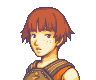

Support Rank C

あ！ あぶない！

！

す す すみません！
敵を狙ったんですが
矢が こちらに飛んでしまって・・・！
ああ あたしったら・・・！ どうしよう！
お怪我は ありませんでしたか？
大丈夫だ
かすってもいない
私 私
本当に申し訳ありません！
謝る必要はない
このようなことは
戦場においてはよくあることだ
でも！
仮に 今の矢で
怪我を負ったとしても
それは周囲への注意を怠った
私の責でもあるだろう
そんな・・・
『戦場で気を抜いてはいけない』
しごく当然のことだ
だからそんなに気に病まなくていい
わかるね？
・・・はい わかりました
こんなところで 落ち込んでいたら
逆に ご迷惑がかかりますよね
気を引き締めなおして
頑張ります！
Support Rank B
はあ・・・
さっきのは敵にあたってよかったけれど
あんな 偶然 みたいなのは嫌だな
もっと練習しないと・・・
うーん もうちょっとこう・・・
というかこうかな・・・
あ！ パーシバル様！
練習か
熱心だな
は はい！
ありがとうございます！
わたし 時々
先日のような失敗をしてしまうので
みんなの足手まといに
なってしまわないようにと思って
そうだな・・・
少し気になっていたのだが
君は もう少し気負わずに
弓を射るようにしたほうがいい
え・・・
も もしかして
わたしの戦いを見ておられたのですか！
私は 常に戦場では自軍の動きを
見るようにしているからね
機をみて 一度この話を
しようと思っていた
君の戦い方には 焦りが見える
そうですか・・・
そう なんですよね
わたし 実戦となると 少し恐くて
どうしても緊張してしまうみたいで
思うように動けないというか
・・・弓兵は
敵兵の目前へ出る必要はない
先陣の後方から援護する役目だ
構えを正し
ただ 心に言い聞かせてやればいい
何も恐れることはない と
最前線は われわれが守る
！ ・・・はい！ やってみます！
Support Rank A
・・・っと やったあ！
うん うんうん
今のは すっごく上手くいった！
ずいぶん上達したな ドロシー
あ パーシバル様！
教えていただいたとおりに
気持ちをおちつかせて やってるんです
自分でも
なんだかよくなったなあ って
よく努力もしているうえに
もともと すじはよかった
後は気持ちの問題だったのだから
これからどんどん腕は上がるだろう
パーシバル様やみんなが
前を守ってくれてるって思ったら
自然に
おちつけるようになって・・・
戦場にいても
安心できることもあるんですね
それは先陣にいるものに
とっても同じことだ
後方の守り無しに
前へ出ることは難しい
・・・少しは 私も
パーシバル様のお役に立てていますか？
じゅうぶん 助けられている
後方からの援護 期待しているぞ
はい！